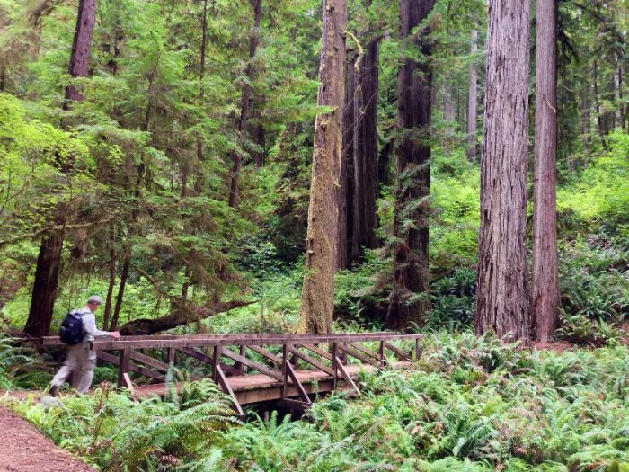
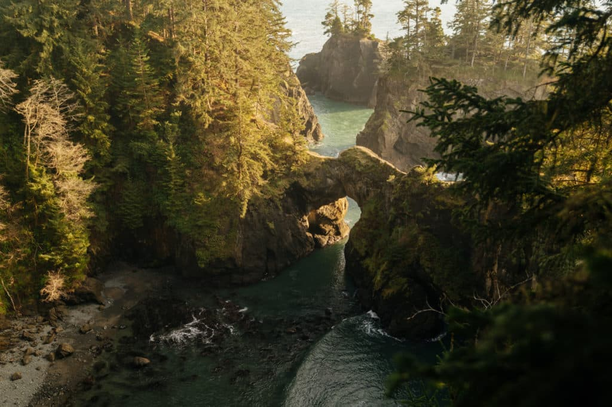
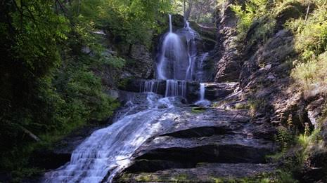
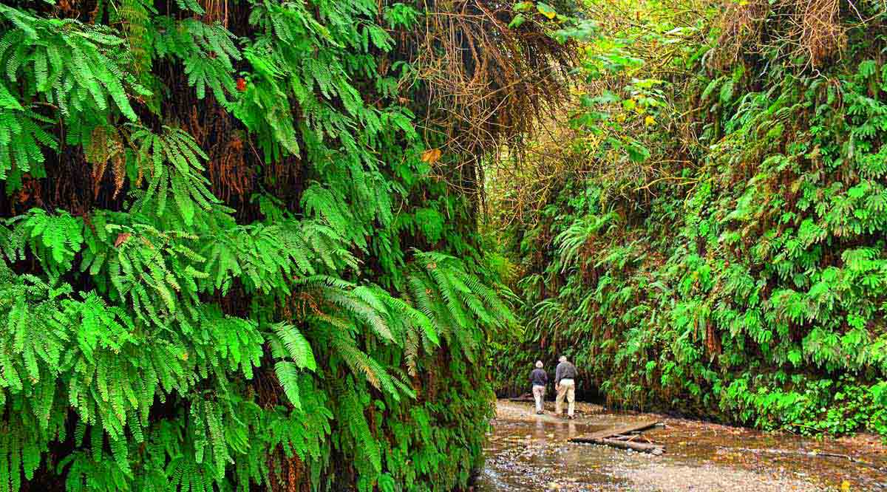
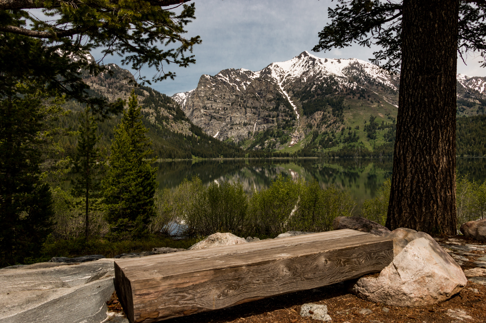
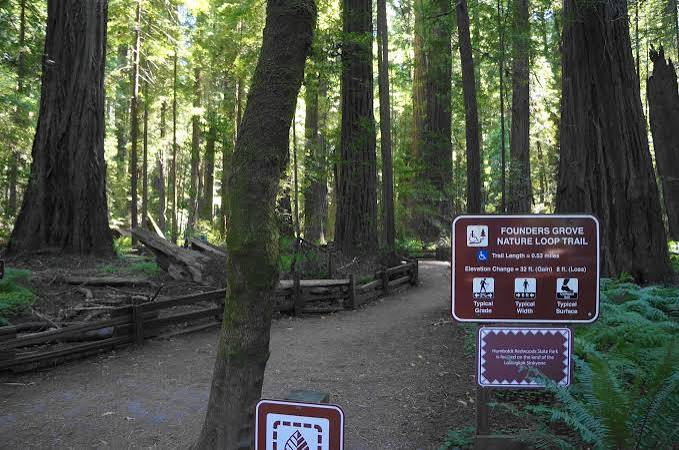

Hiking Trails
Resort Hiking
With 5 miles of hiking trails right here on-site, you can join one of our guided hikes or take your time walking them alone.
Guided Tours
Taking one our many guided tours, you can learn the history of our trails and gain some knowledge on the various plants and animals the Pacific Trails Resort are home to.
State Park Access
Just adjacent to Pacific Trails Resort, you can continue your wilderness exploration with the trails of the neighboring state parks.
Iconic Redwood Trails
Discover a variety of hiking trails just steps from Pacific Trails Resort. Whether you're looking for a peaceful nature walk or a challenging climb with breathtaking panoramic views, we're happy to provide trail maps and help you find the perfect adventure!

James Irvine Trail
Explore towering old-growth redwoods on this moderate 10–12-mile out-and-back trail, connected to the famous Fern Canyon Trail.

Damnation Creek Trail
The Damnation Creek Trail descends 1100 feet through pristine and very attractive old-growth redwood forest to a small rocky cove. 4 miles

Simpson-Reed Trail
Choose this trail for a quick, relaxing walking hike. It's a ADA accesible loop through lush, beautiful grove. Under 1 mile loop

Fern Canyon Trail
Explore the fern-covered, lush canyon featured in the movie, Jurassic Park. Under 1 mile loop

Rockerfeller Loop Trail
A peaceful, easy 0.7-mile path tracing a crystal-clear creek through the majestic 7,000-acre Rockefeller Forest.

Founder's Grove Nature Loop Trail
The half-mile trail runs from the Founders’ Tree to the fallen Dyerville Giant. Due to heavy foot traffic, the trail has widened to approximately 10 feet.